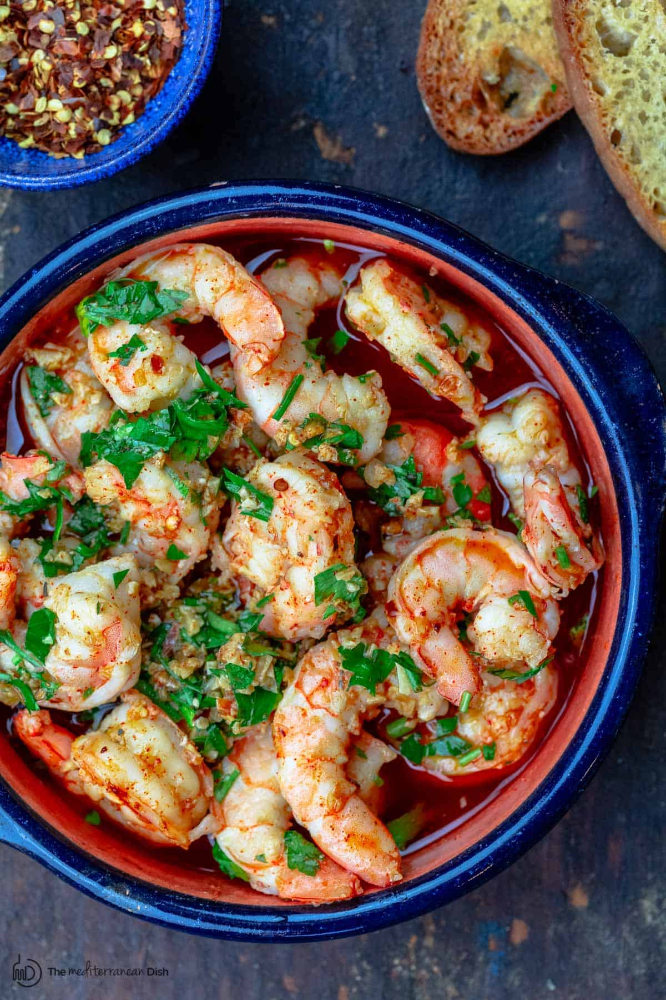

Receipe for Gambas

Description
This is receipe for making Gambas. It is good food to eat with pasta or steak
Ingredients
- 12 shrimps
- 16 garlics
- High quality olive oils
- Peppers
- Onions 1/2
Steps
- Marinate shrimps with olive oil. Add salt and pepper.
- Put plenty of olive oil into a pan and heated.
- Cut heads of shrimp and cook it in medium heat.
- When shrimps start to turn red, take heads out and put onions and garlics. Add salt and pepper.
- After 10 minutes or so, add shrimp and cook each side for 3 minutes.